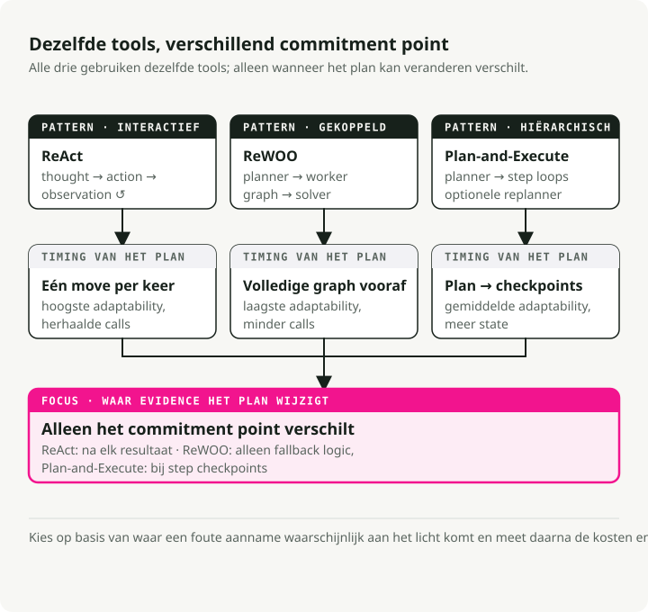
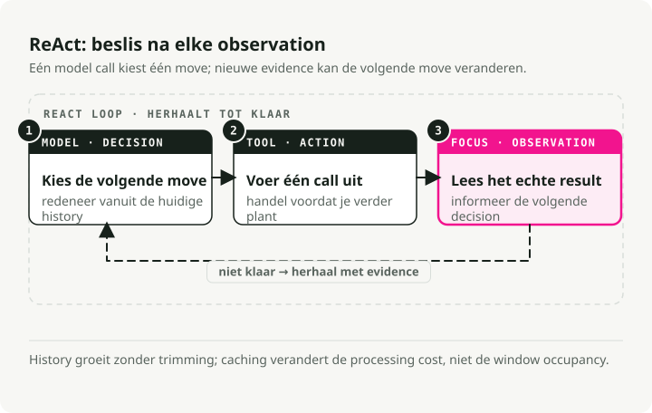
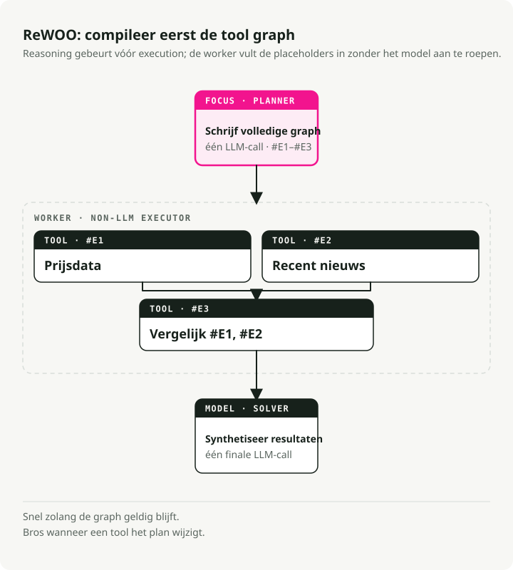
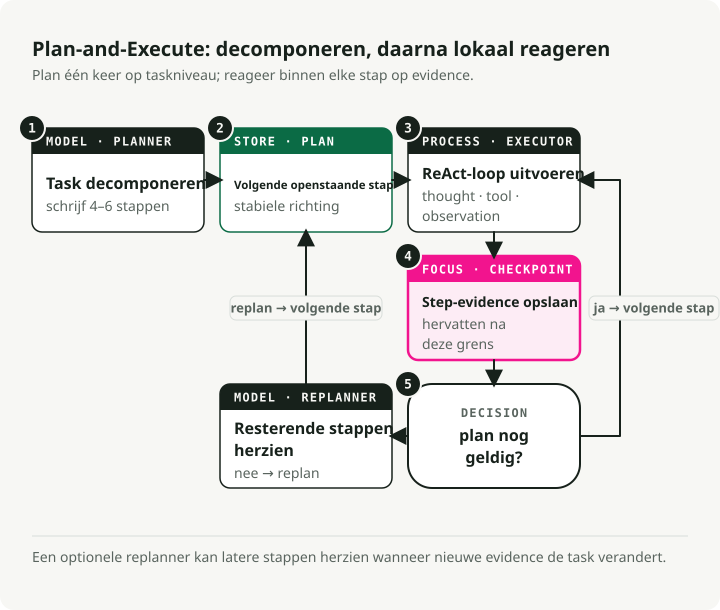
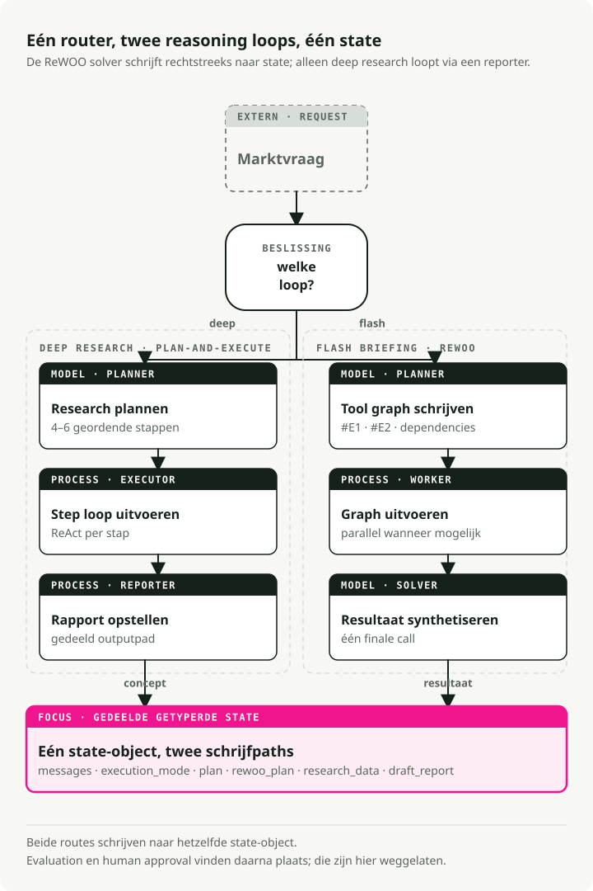

Automatische vertaling
Dit artikel is automatisch vertaald vanuit de oorspronkelijke Engelse versie.
AI-agent reasoning loops in 2026: ReAct vs ReWOO vs Plan-and-Execute
Deel 1 van de serie Engineering the Agentic Stack
Nuttige AI-agents bouwen is nu vooral systeemontwerp, niet prompt engineering. De belangrijkste enkele beslissing is de agent reasoning loop: hoe het systeem plant, tools aanroept, resultaten observeert en beslist wanneer het moet stoppen.
In deze post vergelijk ik de drie AI-agent loop-patronen die je in 2026 moet kennen: ReAct, ReWOO en Plan-and-Execute. Het doorlopende voorbeeld is een Market Analyst Agent die ik in LangGraph heb gebouwd, met de volledige code op GitHub.
TL;DR: ReAct is flexibel maar duur, ReWOO is snel wanneer de workflow voorspelbaar is, en Plan-and-Execute past bij meerstapsanalyse. Een production AI-agent kan per request tussen reasoning loops routeren, met gedeelde state en checkpointed LangGraph-nodes zodat elke taak de loop krijgt die bij zijn vorm past.
Waarom AI-agent reasoning loops belangrijk zijn
Een jaar geleden draaide een LLM nuttig maken vooral om de formulering van prompts. Nu draait het om graph design: hoe reasoning, toolgebruik en memory aan elkaar worden gekoppeld.
De reasoning loop zit midden in die graph. Die bepaalt wanneer het model redeneert, wanneer het een tool aanroept en wanneer het stopt. Kies je de verkeerde, dan verbruik je extra tokens aan calls die je niet nodig had, voeg je per beurt seconden aan latency toe, of breekt je agent zodra een tool iets teruggeeft dat hij niet verwachtte.
Drie AI-agent reasoning-patronen

ReAct: denken, handelen, observeren, herhalen
ReAct (Yao et al., 2022) is het oorspronkelijke patroon voor interactieve agents. Het draait een loop:
- Thought: de agent genereert een "thought" om het doel op te splitsen en de volgende stap te plannen.
- Action: op basis van die thought roept hij een tool aan.
- Observation: de agent leest het resultaat, wat zijn begrip voor de volgende thought bijwerkt.

Voordelen:
- Grounding in echte observaties vermindert verzonnen feiten.
- De agent kan on the fly van strategie veranderen op basis van wat hij net zag.
- De "scratchpad" geeft je een audit trail van de reasoning.
Nadelen:
- History stapelt zich op en wordt bij elke stap opnieuw verwerkt, waardoor latency en kosten meegroeien met de lengte van de loop.
- Verspillend wanneer de tool calls vooraf gepland hadden kunnen worden, precies de niche die ReWOO vult.
- Zonder stopconditie of staplimiet blijft de loop onbeperkt doorlopen.
Beste voor: verkennende taken, debugging, situaties waarin je niet kunt voorspellen wat hierna komt.
ReWOO: plan alles vooraf
ReWOO (Reasoning WithOut Observation) is een efficiëntere neef van ReAct. De truc is reasoning loskoppelen van tool-executie: in plaats van na elke actie te stoppen om te observeren, plant ReWOO de volledige reeks tool calls in één keer.
- Plan: één LLM-call schrijft het volledige plan van tool calls uit, met variable placeholders (
#E1,#E2) voor outputs die nog niet bestaan. - Worker: een non-LLM executor voert de geplande tools sequentieel of parallel uit en vult de placeholders in.
- Solver: een laatste LLM-call neemt de verzamelde observaties en schrijft het antwoord.

Voordelen:
- Ongeveer 5x token-efficiënter dan ReAct, omdat je de herhaalde Thought-Action-Observation-history overslaat.
- Lagere latency. Geen history die bij elke stap opnieuw wordt ingestuurd.
- De planner kan zelfstandig fine-tuned worden, zonder live environment.
Nadelen:
- Fragiel wanneer tools zich misdragen. Het plan gaat ervan uit dat alles werkt.
- Vereist voorspelbare workflows.
- Zonder expliciete fallback-logica blijft een gebrekkig plan doorlopen.
Beste voor: snelle momentopnames, statuschecks, dashboards. Alles waarbij de tools zich voorspelbaar gedragen.
Plan-and-Execute: een hybride
Plan-and-Execute zit tussen de twee in. De paper schetst een eenvoudige splitsing die de meeste moderne agents hebben overgenomen:
- Planning phase: de agent genereert eerst een plan dat de taak opdeelt in kleinere subtaken.
- Execution phase: de agent voert die subtaken vervolgens uit.
De oorspronkelijke paper focuste op zero-shot prompting. Moderne frameworks zoals LangGraph hebben dit uitgebreid tot een volledig orchestration-patroon met sequentiële executie en modelkeuze per stap (een sterk reasoning-model voor planning, een goedkoper model voor executie).

Voordelen:
- Hiërarchische reasoning die weerspiegelt hoe een menselijke expert een project opdeelt.
- Re-planning is mogelijk. Je kunt pauzeren en opnieuw beoordelen als het resultaat van een stap onverwacht was.
- Modelspecialisatie. De planner kan duur zijn, de executor goedkoop.
- Begrensde complexiteit, met een duidelijk checkpoint na elke stap.
Nadelen:
- Hogere latency dan ReWOO omdat stappen sequentieel lopen.
- Meer state om te beheren.
- Overkill voor one-shot queries.
Beste voor: complexe meerstapsanalyse, researchtaken, alles wat aan het eind synthese vereist.
Hoe kies je een AI-agent reasoning loop
| Feature | ReAct (2022) | Plan-and-Execute (2023) | ReWOO (2023) |
|---|---|---|---|
| Core philosophy | Improvisator: handel, en beslis daarna op basis van het resultaat wat je vervolgens doet. | Architect: maak een volledige blauwdruk, voer die uit en evalueer daarna. | Optimizer: schrijf een "script" met variabelen en voer alles in één keer uit. |
| Workflow | Iteratieve loop: Thought → Action → Observation. | Twee fasen: fase 1 (Planning), fase 2 (Execution). | Losgekoppeld: Planner maakt een graph van tool calls; Worker voert ze uit. |
| Adaptability | Hoogst: kan na elke afzonderlijke tool call van richting veranderen. | Gemiddeld: plant meestal pas opnieuw nadat een set stappen is voltooid. | Laagst: volgt meestal het initiële script tenzij de Solver faalt. |
| Efficiency | Laag: hoog tokengebruik; moet voor elke stap de volledige history opnieuw lezen. | Gemiddeld: bespaart tokens doordat het tijdens executie niet opnieuw "nadenkt". | Hoog: minimale LLM-calls; kan tool-executie paralleliseren voor snelheid. |
| Best for | Open verkenning of taken waarbij resultaten onvoorspelbaar zijn. | Taken met een lange horizon die een stabiel doel vereisen (bijv. een paper schrijven). | Gestructureerde, herhaalbare workflows (bijv. het weer checken in 5 steden). |
1. ReAct: het "denk-terwijl-je-gaat"-patroon
Hoe het voelt: als een mens die een probleem debugt. "Ik probeer dit... oké, dat werkte niet, laat ik in plaats daarvan dat proberen."
Sterkte: kan omgaan met unknown unknowns. Als een zoekresultaat een nieuw onderwerp onthult, kan de agent in de volgende stap bijsturen.
Zwakte: geneigd te blijven hangen op een mislukte actie. Het duurste patroon in tokens.
2. Plan-and-Execute: het missiegedreven patroon
Hoe het voelt: als een projectmanager. "Hier is het 5-stappenplan. Laten we stap 1 tot en met 5 uitvoeren en dan controleren of we klaar zijn."
Sterkte: houdt de agent gefocust op het doel op hoog niveau. Betere slagingspercentages bij lange, complexe taken.
Zwakte: als stap 1 faalt op een manier die stap 2-5 breekt, kan de agent zich door het kapotte plan heen blijven werken voordat hij dat merkt.
3. ReWOO: het compiler-patroon
Hoe het voelt: als het schrijven van een klein programma. "Ik heb data nodig van Tool A en Tool B, daarna combineer ik die in Tool C."
Sterkte: veel sneller en goedkoper. Het plan wordt één keer gecompileerd met placeholders (#E1 voor de output van de eerste tool) en daarna uitgevoerd zonder verdere LLM-calls tot aan de finale synthese.
Zwakte: blind tijdens executie. Als de eerste tool zegt "Ik kan die persoon niet vinden", voert de agent nog steeds de volgende stappen uit die ervan afhingen dat die persoon bestond.
Welke moet je kiezen
- ReAct als de agent met een gebruiker chat en in het moment moet reageren.
- Plan-and-Execute als je een lange meerstapsklus automatiseert, zoals een researchrapport.
- ReWOO als je een voorspelbare pipeline hebt en je API-rekening met iets als 80% wilt verlagen.
Een uitgewerkt voorbeeld: de Market Analyst Agent
Om dit concreet te maken heb ik een Market Analyst Agent gebouwd die alle drie de patronen in één codebase gebruikt, voor een market research-taak.
Hij gebruikt LangGraph voor orchestration. Alle drie de patronen delen hetzelfde state-object, zodat de router per request kan kiezen welke wordt uitgevoerd:

State-definitie
De gedeelde state bevat alles wat de agent in alle modi nodig heeft:
class PlanStep(BaseModel):
"""A single step in the research plan."""
step_number: int
description: str
tool_hint: str | None = None
completed: bool = False
result: str | None = None
class UserProfile(BaseModel):
"""Structured user context loaded from long-term memory."""
risk_tolerance: str | None = None
investment_horizon: str | None = None
class AgentState(BaseModel):
"""Main state for the Market Analyst Agent graph."""
# Identity and profile context for memory-backed personalization
user_id: str
user_profile: UserProfile = Field(default_factory=UserProfile)
# Message history with LangGraph's add_messages reducer
messages: Annotated[list, add_messages] = Field(default_factory=list)
# Execution mode (set by router)
execution_mode: ExecutionMode | None = None
# Plan-and-Execute state
plan: list[PlanStep] = Field(default_factory=list)
current_step_index: int = 0
# ReWOO state
rewoo_plan: list[ReWOOPlanStep] = Field(default_factory=list)
# Research results
research_data: ResearchData | None = None
# HITL output
draft_report: DraftReport | None = None
report_approved: bool = False
Patroon 1: Plan-and-Execute-implementatie
Plan-and-Execute past goed bij taken die meerstapssynthese nodig hebben. De truc is planning en executie gescheiden houden: een sterk model voor het plan vooraf, daarna een ReAct-loop om elke stap uit te voeren met ruimte om op toolresultaten te reageren.
Hoe dit aansluit op het patroon:
- Eén planningsfase vooraf. Een enkele LLM-call produceert het volledige plan als een lijst met stapbeschrijvingen.
- Gestructureerde output via Schema-Guided Reasoning, wat geldige JSON garandeert.
- Nog geen tool-executie. De planner beslist alleen wat er moet gebeuren, niet hoe.
- Menselijk leesbare stappen. Elke stap is tekst die een executor zal interpreteren.
# System prompt guides the LLM to think like a research analyst
# creating a strategic plan, not immediate tool calls
PLANNER_SYSTEM_PROMPT = """You are a senior investment research analyst.
Break down stock analysis requests into 4-6 research steps covering:
1. Current price and basic metrics
2. Recent news and announcements
3. Competitor analysis (if relevant)
4. Financial health assessment
5. Risk factors
6. Investment thesis synthesis
Output as JSON with step_number, description, and tool_hint."""
# Schema-Guided Reasoning: Enforce structure with Pydantic
class PlanOutput(BaseModel):
"""Structured output for the planner."""
steps: list[PlanStep] = Field(description="Research steps to execute")
ticker: str = Field(description="The stock ticker being analyzed")
def planner_node(state: AgentState) -> dict:
"""Generate a research plan from the user's request.
This is Phase 1 of Plan-and-Execute: creating the high-level strategy.
"""
# Use a powerful model for strategic planning
llm = ChatAnthropic(model="claude-sonnet-4-5-20250929", temperature=0)
# Apply Schema-Guided Reasoning to guarantee valid plan structure
# This prevents common formatting errors that would break execution
structured_llm = llm.with_structured_output(PlanOutput)
# Context from long-term memory personalizes the plan
profile_context = f"""
User Profile:
- Risk Tolerance: {state.user_profile.risk_tolerance}
- Investment Horizon: {state.user_profile.investment_horizon}
"""
# Single LLM call creates the complete plan
result: PlanOutput = structured_llm.invoke([
SystemMessage(content=PLANNER_SYSTEM_PROMPT + profile_context),
HumanMessage(content=f"Create a research plan for: {last_user_message}"),
])
# State update: Store the plan and initialize tracking
return {
"plan": result.steps, # The sequential steps to execute
"current_step_index": 0, # Start at step 0
"research_data": ResearchData(ticker=result.ticker), # Initialize data container
}
Die regel met llm.with_structured_output(PlanOutput) is Schema-Guided Reasoning (SGR), waarover ik in een eerdere post schreef. Het afdwingen van het schema PlanOutput betekent dat de planner altijd een geldige lijst met stappen teruggeeft. LangGraph gebruikt die gestructureerde outputs vervolgens om deterministische control flow via conditionele edges aan te sturen.
Patroon 2: ReAct-executie
Zodra het plan bestaat, voert de executor elke stap uit als zijn eigen ReAct-loop. Dit is fase 2: elke stap is klein genoeg dat een Thought-Action-Observation-cyclus gefocust blijft, en de agent kan reageren op wat de tool teruggeeft.
Hoe het ReAct-deel aansluit:
- Iteratieve executie. Eén stap tegelijk, met feedback uit observaties.
- De Thought-Action-Observation-loop draait binnen
create_react_agent. - Resultaten van eerdere stappen worden als context meegenomen in de huidige reasoning.
- De agent kiest tools op basis van de stapbeschrijving.
- Hij kan halverwege een stap van aanpak veranderen op basis van wat een tool teruggeeft.
# Tools available for the ReAct agent to choose from
TOOLS = [
get_stock_snapshot,
get_price_history,
search_news,
search_competitors,
get_financials,
]
def executor_node(state: AgentState) -> dict:
"""Execute the current step using a ReAct agent.
This is Phase 2 of Plan-and-Execute: adaptive execution of each planned step.
Each step runs as a mini ReAct loop until completion.
"""
# Get the current step from the plan
current_step = state.plan[state.current_step_index]
# Build context from what we've learned so far
# This matters: each step builds on previous observations
previous_context = ""
for step in state.plan[:state.current_step_index]:
if step.result:
previous_context += f"\nStep {step.step_number}: {step.result}\n"
# Create a ReAct agent for this step
# LangGraph's create_react_agent implements the full Thought-Action-Observation loop:
# 1. Agent generates a "thought" about what tool to call
# 2. Agent calls the tool ("action")
# 3. Tool returns result ("observation")
# 4. Agent decides: call another tool or finish
react_agent = create_react_agent(
model=ChatAnthropic(model="claude-sonnet-4-5-20250929"),
tools=TOOLS,
)
# Invoke the ReAct loop for this single step
# The agent will loop internally until it completes the step
result = react_agent.invoke({
"messages": [
SystemMessage(content=EXECUTOR_SYSTEM_PROMPT),
HumanMessage(content=f"""Execute Step {current_step.step_number}:
{current_step.description}
Ticker: {state.research_data.ticker}
Previous findings: {previous_context}"""),
]
})
# Extract the final answer from the ReAct agent's message history
# The last message contains the synthesis after all tool calls
updated_plan = list(state.plan)
updated_plan[state.current_step_index] = PlanStep(
step_number=current_step.step_number,
description=current_step.description,
completed=True,
result=result["messages"][-1].content, # Final observation
)
# State update: Mark step complete and advance to next
return {
"plan": updated_plan,
"current_step_index": state.current_step_index + 1,
}
Dat is de kern van de Plan-and-Execute-flow: een krachtig model schrijft het plan, daarna voert ReAct elke stap uit met volledige aanpasbaarheid.
Patroon 3: ReWOO voor snelle momentopnames
Voor snelle briefings slaat ReWOO de verweven reasoning over en voert de tools parallel uit. De planner geeft vooraf een gecompileerd script van tool calls uit, en de worker voert dat uit zonder verdere LLM-betrokkenheid.
De vorm ervan:
- Drie fasen (Planner → Worker → Solver), geen loops.
- Tool calls verwijzen naar placeholders
#E1,#E2voor resultaten die nog niet bestaan. - Geen LLM tijdens executie. De worker voert alleen tools uit.
- Onafhankelijke tools draaien parallel.
- Eén synthese-call aan het eind, over alle data tegelijk.
Fase 1: ReWOO-planner (maakt vooraf de volledige execution graph)
class ReWOOPlanStep(BaseModel):
"""A step in the ReWOO plan with variable placeholders.
Key difference from Plan-and-Execute's PlanStep:
- Contains actual tool_name and tool_args (not just description)
- Uses variable references (#E1) for dependencies
"""
step_id: str # e.g., "#E1" - becomes a variable
description: str
tool_name: str # Exact tool to call
tool_args: dict # May contain variable refs like {"price": "#E1"}
depends_on: list[str] = [] # For dependency ordering
result: str | None = None
class ReWOOPlanOutput(BaseModel):
"""Structured output for ReWOO planner."""
steps: list[ReWOOPlanStep] = Field(description="Planned tool calls with variables")
def rewoo_planner_node(state: AgentState) -> dict:
"""Generate a complete plan of tool calls upfront.
This is the key difference from Plan-and-Execute: instead of creating
human-readable step descriptions, we create EXACT tool calls that
the worker will execute blindly.
"""
llm = ChatAnthropic(model="claude-sonnet-4-5-20250929", temperature=0)
# Schema-Guided Reasoning ensures valid tool call specifications
structured_llm = llm.with_structured_output(ReWOOPlanOutput)
ticker = state.research_data.ticker if state.research_data else "UNKNOWN"
# Single LLM call to plan ALL tool executions
result: ReWOOPlanOutput = structured_llm.invoke([
SystemMessage(content=REWOO_PLANNER_PROMPT),
HumanMessage(content=f"""Create a ReWOO plan for: {query}
Ticker: {ticker}
Output tool calls with:
- step_id: Variable name (#E1, #E2, etc.)
- description: What this accomplishes
- tool_name: Exact tool from the list
- tool_args: Dictionary of arguments
- depends_on: List of step_ids this depends on"""),
])
# State update: Store the complete execution plan
# Worker will execute this without any LLM involvement
return {"rewoo_plan": result.steps}
Fase 2: ReWOO-worker (voert tools uit zonder LLM-reasoning)
def rewoo_worker_node(state: AgentState) -> dict:
"""Execute all planned tools in parallel (no LLM calls).
This is the key efficiency: Worker is "dumb" - it just runs tools
according to the plan. No LLM calls = massive token savings.
"""
results = {} # Store results keyed by step_id (e.g., "#E1": "$150.23")
# Execute ALL independent steps in parallel using ThreadPoolExecutor
# This is where ReWOO gets its speed advantage
with ThreadPoolExecutor(max_workers=5) as executor:
futures = {
executor.submit(execute_tool, step): step
for step in state.rewoo_plan
if not step.depends_on # Only independent tools for parallel batch
}
# Collect results as they complete
for future in as_completed(futures):
step = futures[future]
results[step.step_id] = future.result()
# No LLM reasoning here - just store the raw tool output
# State update: Store results for the Solver phase
return {"rewoo_plan": updated_steps}
Fase 3: ReWOO-solver (synthetiseert alle resultaten in één LLM-call)
def rewoo_solver_node(state: AgentState) -> dict:
"""Synthesize all tool results into a flash briefing.
This is the second efficiency gain: Instead of interleaving
LLM calls with tool execution (like ReAct), we make ONE
final synthesis call with all gathered data.
"""
# Build context from ALL tool results at once
tool_results = []
for step in state.rewoo_plan:
if step.result:
tool_results.append(f"### {step.description}\n{step.result}")
context = "\n\n".join(tool_results)
# Single LLM call to synthesize everything
structured_llm = llm.with_structured_output(FlashBriefingOutput)
result = structured_llm.invoke([
SystemMessage(content=REWOO_SOLVER_PROMPT),
HumanMessage(content=f"Create a flash briefing from this data:\n\n{context}"),
])
return {"draft_report": result}
Het belangrijkste verschil: ReWOO plant elke tool call vooraf met placeholders (#E1, #E2), voert ze parallel uit zonder LLM-calls tussendoor en synthetiseert de resultaten in één call aan het eind. Dat maakt het goedkoop voor voorspelbare workflows.
De code begrijpen: hoe elk patroon verschilt
De drie patronen verschillen in wanneer en hoe ze de LLM aanroepen:
| Pattern | LLM calls during execution | State updates | Key code pattern |
|---|---|---|---|
| Plan-and-Execute | 1 voor planning + 1 per stap | Sequentiële stapvoltooiing | planner_node() → loop: executor_node() → reporter_node() |
| ReAct (binnen elke stap) | Meerdere per stap (thought-action-cycli) | Opgebouwde message-history | create_react_agent() loopt intern door tot de stap voltooid is |
| ReWOO | 1 voor planning + 0 tijdens executie + 1 voor synthese | Parallelle toolvoltooiing | rewoo_planner_node() → rewoo_worker_node() → rewoo_solver_node() |
Wat ertussen verandert, is wat de planner produceert. Dat bepaalt alles downstream.
-
Plan-and-Execute maakt menselijk leesbare stapbeschrijvingen:
# Planner output (list of PlanStep objects) plan = [ PlanStep( step_number=1, description="Get current price and key financial metrics", tool_hint="get_stock_price" ), PlanStep( step_number=2, description="Search for recent news and earnings", tool_hint="search_news" ), # ... more steps ]De executor leest elke beschrijving en beslist welke tools moeten worden aangeroepen. Flexibel, maar het kost een LLM-call per stap.
-
ReAct heeft geen plan vooraf. Het gebruikt iteratieve reasoning:
# No planning phase - ReAct works step-by-step with accumulated messages messages = [ HumanMessage(content="Execute Step 1: Get current price"), AIMessage(content="I'll call get_stock_price"), ToolMessage(tool_call_id="1", content="$132.45"), AIMessage(content="Now I need metrics..."), # ... agent continues until step complete ]Meerdere LLM-calls per stap, aangepast op basis van observaties. Het meest flexibel, het duurst.
-
ReWOO maakt expliciete, uitvoerbare specificaties van tool calls:
# Planner output (list of ReWOOPlanStep objects) rewoo_plan = [ ReWOOPlanStep( step_id="#E1", tool_name="get_stock_price", tool_args={"ticker": "NVDA"} ), ReWOOPlanStep( step_id="#E2", tool_name="search_news", tool_args={"query": "NVDA earnings", "limit": 5} ), # ... all tool calls planned upfront ]De worker draait blind, zonder LLM-betrokkenheid. Alle reasoning zit in de planner en solver. De goedkoopste van de drie.
Memory- en state-flow:
- Plan-and-Execute: state beweegt via
plan→current_step_index→research_data. - ReAct: state stapelt zich op in de array
messages(de volledige conversation history). - ReWOO: state beweegt via
rewoo_plan, waarbij veldenresultdoor de worker worden ingevuld.
Alles samenbrengen: de graph bedraden
Zo bestaan de drie patronen naast elkaar in één LangGraph-systeem. Ze delen één AgentState en leven in één graph. Een router kiest per request het pad, dus dit is één agent met drie execution modes, niet drie agents in een trenchcoat.
LangGraph houdt de wiring declaratief:
def create_graph(checkpointer=None):
builder = StateGraph(AgentState)
# Add nodes
builder.add_node("router", router_node)
builder.add_node("planner", planner_node)
builder.add_node("executor", executor_node)
builder.add_node("reporter", reporter_node)
builder.add_node("rewoo_planner", rewoo_planner_node)
builder.add_node("rewoo_worker", rewoo_worker_node)
builder.add_node("rewoo_solver", rewoo_solver_node)
# Define edges
builder.add_edge(START, "router")
builder.add_conditional_edges("router", route_after_router, {
"planner": "planner",
"rewoo_planner": "rewoo_planner",
})
# Deep Research path
builder.add_edge("planner", "executor")
builder.add_conditional_edges("executor", route_after_executor, {
"executor": "executor", # Loop back for more steps
"reporter": "reporter", # Done with plan
})
builder.add_edge("reporter", END)
# Flash Briefing path (ReWOO)
builder.add_edge("rewoo_planner", "rewoo_worker")
builder.add_edge("rewoo_worker", "rewoo_solver")
builder.add_edge("rewoo_solver", END)
return builder.compile(
checkpointer=checkpointer,
interrupt_before=["reporter"], # HITL pause for approval
)
Automatische patroonselectie met een router
Om voor elk request de juiste loop te kiezen, heb ik een router-classifier toegevoegd. Die gebruikt Schema-Guided Reasoning om de classificatie betrouwbaar te houden:
class ExecutionMode(str, Enum):
"""Execution mode for the agent."""
DEEP_RESEARCH = "deep_research" # Plan-and-Execute + ReAct (thorough)
FLASH_BRIEFING = "flash_briefing" # ReWOO (fast, token-efficient)
class RouterOutput(BaseModel):
"""Structured output for the router."""
mode: ExecutionMode # DEEP_RESEARCH or FLASH_BRIEFING
ticker: str
reasoning: str
ROUTER_SYSTEM_PROMPT = """Classify the user's request:
1. **deep_research**: Complex analysis requiring synthesis
- Examples: "Analyze strategic risks", "investment thesis"
2. **flash_briefing**: Quick snapshots, simple data retrieval
- Examples: "quick snapshot", "current price"
Default to deep_research if unclear."""
structured_llm = llm.with_structured_output(RouterOutput)
Met dit op zijn plaats kiezen gebruikers geen modus. De router routeert "current price" zelf naar ReWOO en "investment thesis" naar Plan-and-Execute.
Belangrijkste conclusies
- ReAct is de standaard voor flexibiliteit, ten koste van tokens en latency.
- ReWOO wint op snelheid en kosten wanneer de tools betrouwbaar zijn en de resultaten voorspelbaar.
- Plan-and-Execute is de juiste keuze voor complexe analyse die aan het eind synthese nodig heeft.
- Een router kan per request daartussen kiezen, zodat gebruikers dat niet hoeven te doen.
- State management is belangrijk. De checkpointing van LangGraph maakt interrupts en recovery mogelijk.
De volledige implementatie, inclusief de router en de gedeelde state, staat in de Market Analyst Agent-repository.
Wat volgt
Deel 2, AI-agent memory architecture in 2026, gaat over short-term context met PostgreSQL-checkpointing en long-term knowledge in Qdrant vector storage. Dat maakt pause/resume-workflows en cross-session learning mogelijk.
Referenties
- ReAct: Synergizing Reasoning and Acting in Language Models (Yao et al., 2022)
- ReWOO: Decoupling Reasoning from Observations for Efficient Augmented Language Models (Xu et al., 2023)
- Plan-and-Solve Prompting: Improving Zero-Shot Chain-of-Thought Reasoning by Large Language Models (Wang et al., 2023)
- Market Analyst Agent Repository
De code van de Market Analyst Agent staat op GitHub als je wilt meelezen.
Serie: Engineering the Agentic Stack
- Deel 1: AI-agent reasoning loops in 2026 (deze post)
- Deel 2: AI-agent memory architecture in 2026 — checkpoints, vector stores en document memory
- Deel 3: AI-agent tool use in 2026 — MCP, CLI, Skills, code execution en ACI
- Deel 4: AI-agent security in 2026 — guardrails, permissions, sandboxes, HITL en MCP-scoping
- Deel 5: Long-running AI-agent runtime in 2026 — sessies, sandboxes, checkpoints, harnesses en deployment-vormen